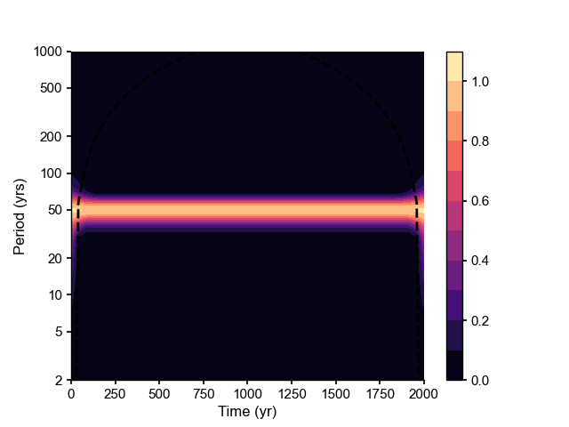

wwz (pyleoclim.utils.wavelet.wwz)
- pyleoclim.utils.wavelet.wwz(ys, ts, tau=None, ntau=None, freq=None, freq_method='log', freq_kwargs={}, c=0.012665147955292222, Neff=3, Neff_coi=3, nMC=200, nproc=8, detrend=False, sg_kwargs=None, gaussianize=False, standardize=False, method='Kirchner_numba', len_bd=0, bc_mode='reflect', reflect_type='odd')[source]
Weighted wavelet amplitude (WWA) for unevenly-spaced data
- Parameters
ys (array) – a time series, NaNs will be deleted automatically
ts (array) – the time points, if ys contains any NaNs, some of the time points will be deleted accordingly
tau (array) – the evenly-spaced time vector for the analysis, namely the time shift for wavelet analysis
freq (array) – vector of frequency
freq_method (str) –
Method to generate the frequency vector if not set directly. The following options are avialable:
’log’ (default)
’lomb_scargle’
’welch’
’scale’
’nfft’
See
pyleoclim.utils.wavelet.make_freq_vector()for detailsfreq_kwargs (str) – used when freq=None for certain methods
c (float) – the decay constant that determines the analytical resolution of frequency for analysis, the smaller the higher resolution; the default value 1/(8*np.pi**2) is good for most of the wavelet analysis cases
Neff (int) – effective number of points
nMC (int) – the number of Monte-Carlo simulations
nproc (int) – the number of processes for multiprocessing
detrend (string, {None, 'linear', 'constant', 'savitzy-golay'}) –
available methods for detrending, including
None: the original time series is assumed to have no trend;
’linear’: a linear least-squares fit to ys is subtracted;
’constant’: the mean of ys is subtracted
’savitzy-golay’: ys is filtered using the Savitzky-Golay filters and the resulting filtered series is subtracted from y.
Empirical mode decomposition. The last mode is assumed to be the trend and removed from the series
sg_kwargs (dict) – The parameters for the Savitzky-Golay filters. See
pyleoclim.utils.filter.savitzky_golay()for details.method (string, {'Foster', 'Kirchner', 'Kirchner_f2py', 'Kirchner_numba'}) –
available specific implementation of WWZ, including
’Foster’: the original WWZ method;
’Kirchner’: the method Kirchner adapted from Foster;
’Kirchner_f2py’: the method Kirchner adapted from Foster, implemented with f2py for acceleration;
’Kirchner_numba’: the method Kirchner adapted from Foster, implemented with Numba for acceleration (default);
len_bd (int) – the number of the ghost grids want to creat on each boundary
bc_mode (string, {'constant', 'edge', 'linear_ramp', 'maximum', 'mean', 'median', 'minimum', 'reflect' , 'symmetric', 'wrap'}) – For more details, see np.lib.pad()
reflect_type (string, optional, {‘even’, ‘odd’}) – Used in ‘reflect’, and ‘symmetric’. The ‘even’ style is the default with an unaltered reflection around the edge value. For the ‘odd’ style, the extented part of the array is created by subtracting the reflected values from two times the edge value. For more details, see np.lib.pad()
- Returns
res – a namedtuple that includes below items
- wwaarray
the weighted wavelet amplitude.
- coiarray
cone of influence
- freqarray
vector of frequency
- tauarray
the evenly-spaced time points, namely the time shift for wavelet analysis
- Neffsarray
the matrix of effective number of points in the time-scale coordinates
- coeffarray
the wavelet transform coefficents
- Return type
namedtuple
See also
pyleoclim.utils.wavelet.wwz_basicReturns the weighted wavelet amplitude using the original method from Kirchner. No multiprocessing
pyleoclim.utils.wavelet.wwz_nprocReturns the weighted wavelet amplitude using the original method from Kirchner. Supports multiprocessing
pyleoclim.utils.wavelet.kirchner_basicReturn the weighted wavelet amplitude (WWA) modified by Kirchner. No multiprocessing
pyleoclim.utils.wavelet.kirchner_nprocReturns the weighted wavelet amplitude (WWA) modified by Kirchner. Supports multiprocessing
pyleoclim.utils.wavelet.kirchner_numbaReturn the weighted wavelet amplitude (WWA) modified by Kirchner using Numba package.
pyleoclim.utils.wavelet.kirchner_f2pyReturns the weighted wavelet amplitude (WWA) modified by Kirchner. Uses Fortran. Fastest method but requires a compiler.
pyleoclim.utils.filter.savitzky_golaySmooth (and optionally differentiate) data with a Savitzky-Golay filter.
pyleoclim.utils.wavelet.make_freq_vectorMake frequency vector
Examples
We perform an ideal test below. We use a sine wave with a period of 50 yrs as the signal for test. Then performing wavelet analysis should return an energy band around period of 50 yrs in the time-period scalogram domain.
In [1]: from pyleoclim import utils In [2]: import matplotlib.pyplot as plt In [3]: from matplotlib.ticker import ScalarFormatter, FormatStrFormatter In [4]: import numpy as np # Create a signal In [5]: time = np.arange(2001) In [6]: f = 1/50 # the period is then 1/f = 50 In [7]: signal = np.cos(2*np.pi*f*time) # Wavelet Analysis In [8]: res = utils.wwz(signal, time) # Visualization In [9]: fig, ax = plt.subplots() In [10]: contourf_args = {'cmap': 'magma', 'origin': 'lower', 'levels': 11} In [11]: cbar_args = {'drawedges': False, 'orientation': 'vertical', 'fraction': 0.15, 'pad': 0.05} In [12]: cont = ax.contourf(res.time, 1/res.freq, res.amplitude.T, **contourf_args) In [13]: ax.plot(res.time, res.coi, 'k--') # plot the cone of influence Out[13]: [<matplotlib.lines.Line2D at 0x1af9c2910>] In [14]: ax.set_yscale('log') In [15]: ax.set_yticks([2, 5, 10, 20, 50, 100, 200, 500, 1000]) Out[15]: [<matplotlib.axis.YTick at 0x1b002a220>, <matplotlib.axis.YTick at 0x1b10d25e0>, <matplotlib.axis.YTick at 0x1b11baee0>, <matplotlib.axis.YTick at 0x1af8facd0>, <matplotlib.axis.YTick at 0x1b12d8370>, <matplotlib.axis.YTick at 0x1af4872e0>, <matplotlib.axis.YTick at 0x1b12d8fa0>, <matplotlib.axis.YTick at 0x1b134ea00>, <matplotlib.axis.YTick at 0x1b099c5e0>] In [16]: ax.set_ylim([2, 1000]) Out[16]: (2.0, 1000.0) In [17]: ax.yaxis.set_major_formatter(ScalarFormatter()) In [18]: ax.yaxis.set_major_formatter(FormatStrFormatter('%g')) In [19]: ax.set_xlabel('Time (yr)') Out[19]: Text(0.5, 0, 'Time (yr)') In [20]: ax.set_ylabel('Period (yrs)') Out[20]: Text(0, 0.5, 'Period (yrs)') In [21]: cb = plt.colorbar(cont, **cbar_args) In [22]: plt.show()